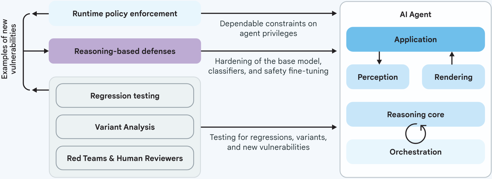
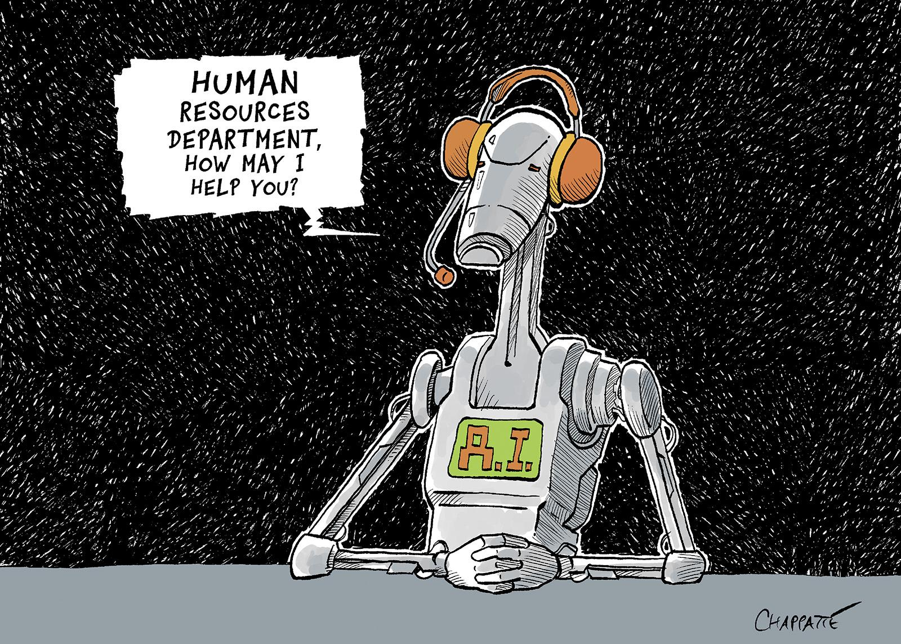

Percepts/Actions
physical sensors
Recent public, academic, and industry interest in AI agents reflects a broader shift in system capabilities— from rational agents operating over explicit models to general-purpose language agents that coordinate tools and learn from data. Following the launch of large-scale generative models, agent design moved beyond rule-bound settings toward more flexible, learning-driven architectures that adapt to context.
“Agent-based computing (ABC) is likely to be the next significant breakthrough in software development.”
— Sargent (1992) · via Wooldridge & Jennings (1995)“[…] agent technology is, at the time of writing, one of the most active areas of research in AI and computer science generally.”
— Wooldridge & Jennings (1995)“AI Agents are revolutionizing the software development life cycle.”
— The New Stack (Sayers, 2025)Agents are not a new idea; their prominence today reflects renewed feasibility rather than novelty. What has changed is the substrate: large language models, tool-augmented execution, and scalable memory make long-standing agent designs practical at last.
“[…] access to at least one, and potentially many information sources, … return with an appropriate technical report […]”
— Wooldridge & Jennings (1995)In the mid-1990s, researchers outlined “information agents” … anticipates today’s language-agent architectures.
Contemporary research agents operationalize the 1995 vision…
An agent perceives and acts in an environment …
Now that we know what a rational agent is … the LM carries out goal-directed behavior—while still being just a next-token predictor.
Optimize log-likelihood of text …
"What is the capital of the country where the Eiffel Tower is located?"
"What is the capital of the country where the Eiffel Tower is located?"
“In the context of agentic LLMs, tool use refers to the model's ability to interact with external tools, APIs, or functions to perform tasks it cannot accomplish through language generation alone.”
Enables LLMs to:
Simulate a tool call: ask a math question (e.g. 123 * 45)
Let's start with a concrete example that perfectly illustrates the power of AI agents in software engineering - the Bug Localizer.
This isn't just about speed - it's about consistency and accuracy. The agent doesn't get tired, doesn't overlook details, and doesn't carry cognitive biases that might lead us down the wrong debugging path.
So how does this magic happen? Let's look at the underlying framework that makes AI agents so powerful in software engineering.

Processing inputs from various sources
Analyzing information and making decisions
Executing tasks based on decisions
What makes this framework particularly powerful is the feedback loop. The agent can observe the results of its actions, learn from outcomes, and iteratively improve its approach - just like an experienced developer would.
Let's dive deeper into how AI agents perceive and process information in software engineering contexts.
The multi-modal nature of perception is what makes these agents so powerful…
Memory is what separates sophisticated AI agents from simple code generators…
Cline is an AI agent specifically designed for software engineering tasks…
Evaluating a web development AI coding agent is a complex task…
Now that we saw all the possible utilizations of LLMs, let's talk risk. For example, a government agency utilizing language agents to automate part of their process. This happens all over the place and lately in Potsdam as well when it comes to housing benefit applications.[1]
The capabilities of the implementation are unknown, but automatic answering of emails, checking for application completeness, and a chatbot for workers of the municipality are part of the discussion.
This illustrates what could go wrong, and as reliable agents, which always follow the system prompt, are quite rare, security systems need to be in place. The two main goals are that a language agent should never violate the privacy requirements (e.g., hand out information about other applicants) and should never misuse tools (e.g., generate faulty emails).
The input is the main source of malicious or harmful information. The biggest risk is prompt injections[2], which aim to get the language agent to behave outside its intended scope.
Imagine a language agent controlled via chat. There should be administrators with the ability to alter its behavior while you wouldn't want it to do what a normal user instructs it to. This necessitates the difficult ability to differentiate between contexts and privileges of users.
The output is where faulty input or faulty reasoning leads to real problems.
A language agent might violate privacy by handing out information not intended for the specific user. This shows that output context also needs to be considered.
Another risk is misuse of tools. A language agent mishandling a database might make all successive tasks impossible, causing long-term harm. More powerful tools need stronger protection.
Google details methods to counteract these problems.[3]
Limit input and output of the LLM. Filter harmful prompts and exclude sensitive data. Standardize APIs to prevent misuse. Use IT security practices like testing, logging, and human oversight.
Google proposes “soft constraints” to allow helpful emergent behavior. This includes adversarial training and LLM-based guard models that analyze and predict harmful behavior. These systems may limit privileges or require human intervention. [4]
“Everyone wants to generate texts with AI. No one wants to read AI generated texts.”
Municipalities may automate emails, but this can increase workload for citizens. There is an inherent conflict of interest between users and developers.
Google and Potsdam both point to human supervision. But humans tend to lose vigilance when systems perform reliably. AI agents should only be used if they surpass humans without supervision. [5]
With that in mind, consider carefully whether a language agent is the correct solution for your problem.
